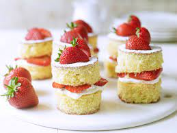

Mini Victoria Spongecakes

Description
Make these bite-sized victoria sponges for a special afternoon tea or birthday celebration. Choose your favourite jam for the filling, then add whipped cream.
This recipe makes 12 sponge cakes.
Ingredients
- 150g unsalted butter, softened
- 150g golden caster sugar
- 2 eggs
- 1 tbsp milk
- 1/2 tsp vanilla extract
- 150g self-raising flour
- 250ml double cream
- 2 tbsp icing sugar, plus extra for dusting
- 185g jam of your choice (strawberry or raspberry)
Steps
- Heat the oven to 180C/160C fan/gas 4 and line a 12-hole muffin tin with paper cases. Beat the butter and caster sugar together using an electric whisk until pale and fluffy, then whisk in the eggs, one at a time, scraping down the sides of the bowl after each addition.
- Add the milk, vanilla, flour and a pinch of salt, then beat again until smooth. Divide the batter evenly between the paper cases – this can be easily done using an ice cream scoop. Bake for 17-20 mins, or until the sponges are golden, risen and a skewer inserted into the middles comes out clean. Leave to cool in the tin for 10 mins, then transfer to a wire rack to cool completely. Once completely cool, the sponges can be frozen for up to three months.
- Remove the paper cases from the sponges, then split the sponges in half through the equator using a small serrated knife. Set aside.
- Whip the cream and icing sugar together to soft peaks using an electric whisk. Spread a little jam over the base of each sponge, then spoon or pipe over a dollop of whipped cream and sandwich with the tops of the sponges. Dust with a little icing sugar before serving. Best eaten on the same day.
Click here for more recipes!